Glacier Peak, Frostbite Ridge
- Glacier Peak, Frostbite Ridge
- July 13-14, 2002
I’d been looking forward to a solitary weekend in the mountains for a while, especially after a series of fun (and tiring) “do it in a day” trips. I like to feel in tune with the mountains, and usually it takes an overnight trip to get this. Being alone is fun sometimes too, it’s the way I started exploring the hills. I thought about different options, many of them were truthfully over my head for a solo trip.

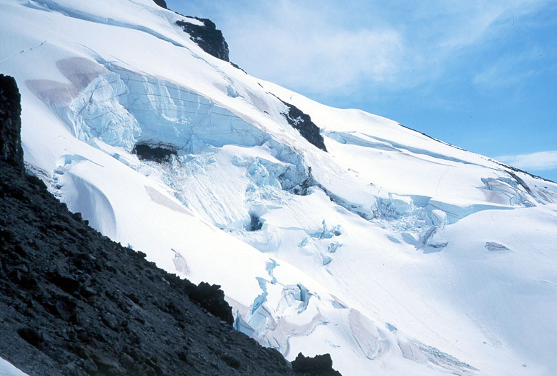
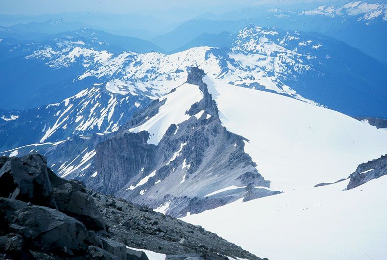
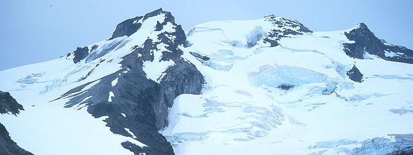
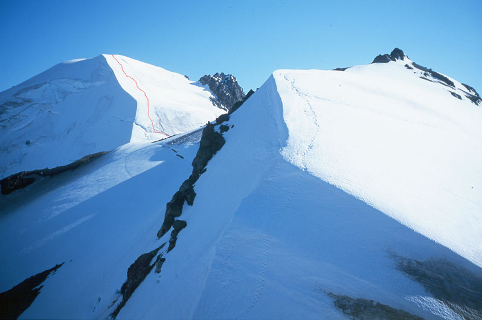
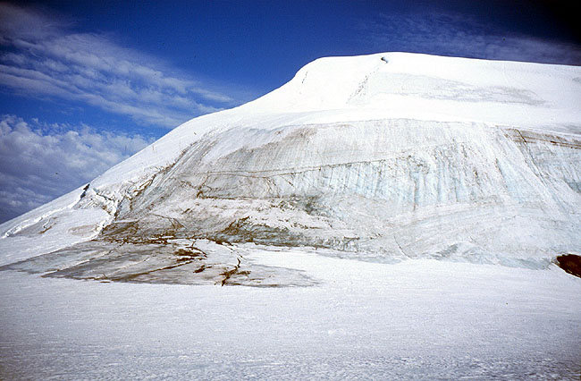
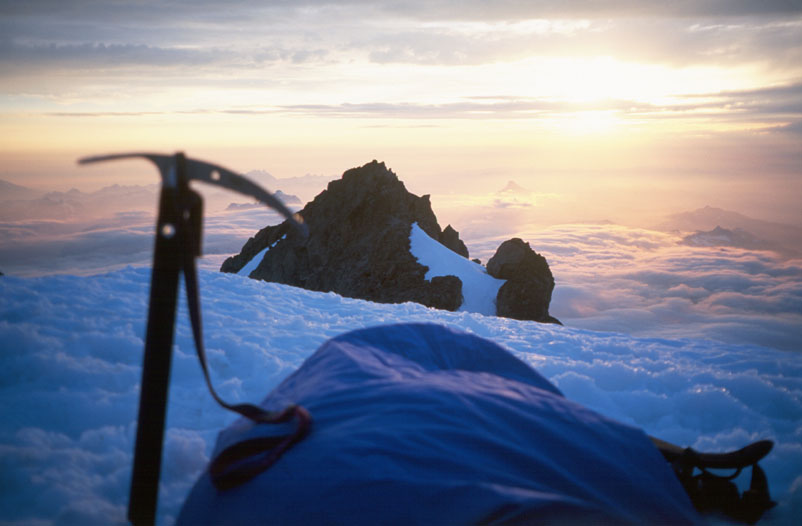
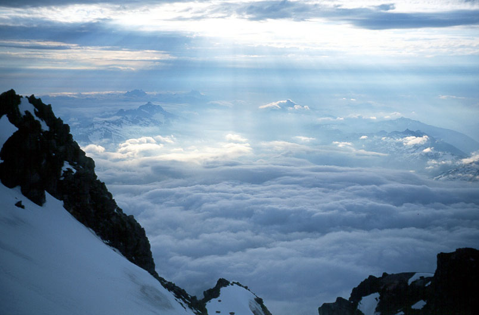
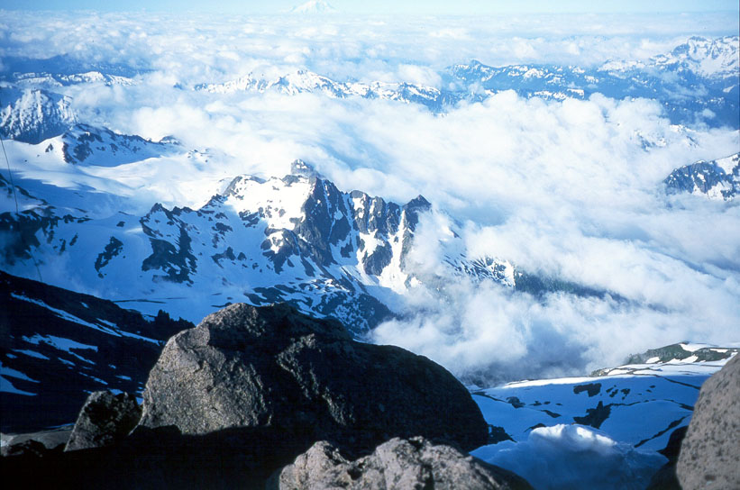
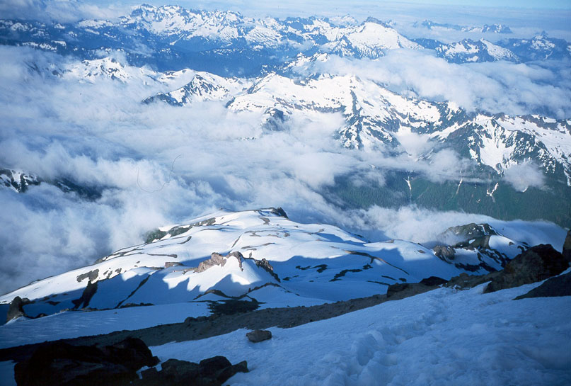
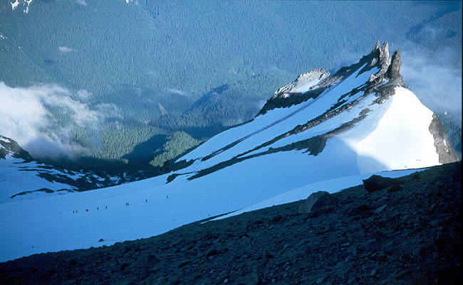
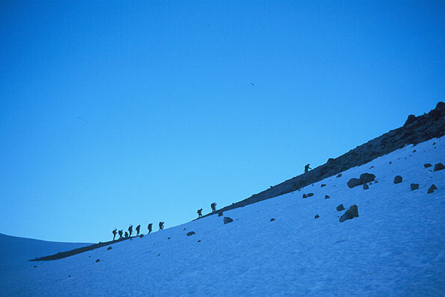
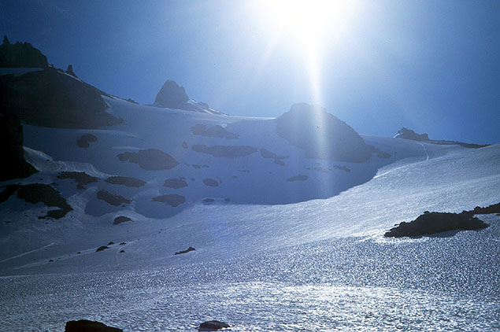
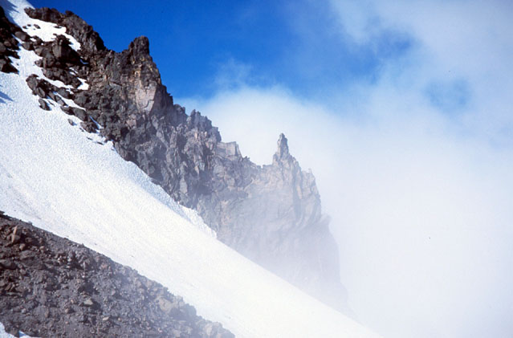
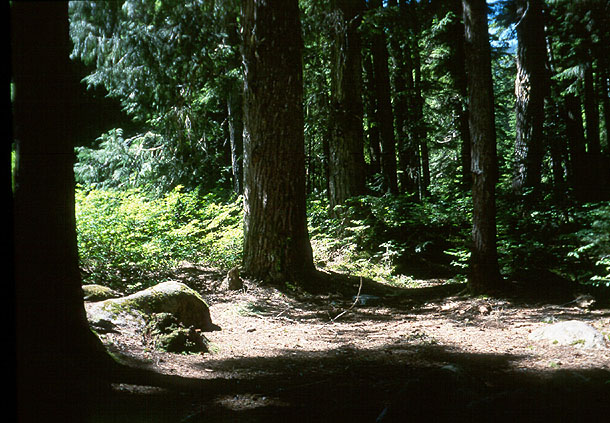
But Glacier Peak could be done. I’d read a report from Eric’s Base Camp about a solo climb of Frostbite Ridge and a descent of the Sitkum Glacier. Reports indicated that crevasses are not a serious problem at this time of year, on this particular trip. I bought a tiny canister stove and a dehydrated meal so I could stop anywhere on the mountain I felt like, and always be able to melt water from snow. I wore light hiking boots, but carried aluminum crampons and a second ice tool that might be handy for the final “ice wall” on the route. Traveling light would be a real asset on such a long route!
Kris would need the car over the weekend, so she dropped me off at the White Chuck trail-head. I hoped to hitch a ride out, at least to Darrington, or as far as Seattle if someone came along. I told her to pick me up at 6 pm Sunday if she hadn’t heard from me yet. I kissed Kris goodbye, and started hiking at 8:30 am.
I always hike too quickly at first, mind racing with all the little details, all the “what ifs.” When my shins got sore I slowed down. I was worried about the weather. The forecast was good Thursday, and Friday morning, but I was strangely superstitious about checking it Saturday before we left! So when sprinkles of rain greeted us at the trail-head, I wondered how far I’d actually get. The mountain could be seen, it looked great from the road. But in the west, a dark purple wall of clouds was moving in, as furtive glances over my shoulder confirmed.
But eventually I lost myself in the steady hiking. I stayed cool, thinking about many things beside the White Chuck river. I walked 5 up-and-down miles beside and above it, coming into the open beside the rocky stream. A junction to the left led me towards Kennedy Ridge. Finally the trail climbed and maintained it’s elevation. After 1.7 miles, I met the Pacific Crest Trail, still partially buried in snow, and followed it up to another gradual ridgetop hike. The snow deepened, and I seemed to be forever climbing onto a snowbank, and descending the other side to bare ground. The low throb of a Ptarmigan sounded now and then in the woods. There were some tracks to follow, and I eventually arrived at Boulder Creek, which I had to cross. I was a little confused on the near side of the bank, but eventually found the right way. At which time, two friendly climbers came down and told me about their trip. They had climbed Frostbite Ridge to the Rabbit Ears, but ran into their turn-around time. I asked about water sources, and the conditions of the glacier between 8000 and 8800 feet, an area I knew that crevasses could occur. “Just a snowfield”, they said. I stopped to eat half a sandwich, and continued with new energy.
These were the first people I met on the trip, and the last until my descent the next day. They mentioned that a party of six had gone up Kennedy Ridge the day before. After a little hiking, I began to wonder where to leave the trail and head up the ridge. I crossed a steep and awkward brush slope, losing the trail but gaining a bevy of marmots. At the other end of the slope I decided to head up. Very melted out tracks seemed to confirm my decision. The sun was out, and I had great views of mountains like White Chuck and Sloan Peak. I gained the ridgetop and hiked a spectacular trail with great views down each side. The incredible Kennedy Glacier spilled down the side of the mountain on my right, and a view into the dark Suiattle valley kept my left side interested. But it was clouding up in the south and west. Before long, I could smell the approaching rain. The smell reminded me of Texas. I performed some surgery on my pack to make it waterproof, and got my jacket handy. Sheets of rain were visible only a few miles away.
After some tedious side-hilling on unstable ground, I reached a small creek. I filled my quart of water here, since it may be my last chance. At 7200 feet, I stepped onto the glacier, following old tracks on a traverse around Kennedy Peak. As I rounded the shoulder of the mountain, I was struck by the incredible Chocolate Glacier - building sized chunks of ice tumbling down to a dusty valley. What mountains were I looking at? Perhaps Bonanza, Copper and Fernow? My map didn’t cover that, I’d have to guess. At 8200 feet, I was climbing above the pass near Kennedy Peak. I was getting pretty tired. Hearing burbling water, I left my pack on the snow and followed the sound down the Kennedy Glacier about 200 feet to a curving arc of snow and ice sheltering a babbling brook. I sat for a long time, drinking a full quart before leaving. The climb to 8800 feet seemed to take a long time. Ahead of me was Frostbite Ridge, a mix of decomposing gravel and steep snow. I took off my crampons and ate the other half of my sandwich before getting onto the rock. I realized I was tired, and imagined possible bivy sites near the Rabbit Ears or perhaps in the crater 500 feet below the summit. The rock was tiring. If I stopped to rest, I’d sink back in the sand at least one footstep. I learned to stop on well-anchored boulders. I welcomed the chance to change back to the snow, which was easy to kick steps in, but didn’t provide too much security for the axe. The angle was a steady 40 degrees, but with thrilling exposure. Patches of dirty bare ice were on my left, and pulverized rock somehow clung on the right.
“Now I’m finally climbing,” I thought. It had been twelve miles and 7000 feet of elevation gain to this point, this point where my mind awakened to the precariousness of my position and the delicacy of safe passage. I felt too exposed and alone to stop and get the camera out for a picture, but was enjoying myself greatly. I saw tracks, weaving between crevasses on the Kennedy Glacier, and enjoyed that climb as if I’d been there. The ridge steepened as it reached rocky towers. The snow was sugary, and my steps would sometimes collapse under my weight. I had to be very careful since I couldn’t pull on the ice axe to climb up. On reaching the solid rock of the Rabbit Ears, I was again pleased with the change of medium.
I decided to keep crampons on for the climb over and down from the Rabbit Ears, as a formidable obstacle loomed just ahead. There was a cliff of snow and ice, which looked vertical for 100 feet. I went up to it and contemplated a long steep traverse around it on the left. But there were crevasses, cliffs and moats that way. So I carefully climbed, and found the difficulties less than expected. I guess it was 60 degrees for 40 feet, and the snow was good where I needed it. Pleased with this, I hiked along the crater rim, occasionally punching through into holes, which I learned to avoid. I looked across the crater at my final obstacle. If I could climb that wall of ice and snow, I could sleep on the summit. If I couldn’t, I’d have to return the way I came.
Descending into the crater was tricky, I picked a poor place to do it. Facing in, I kicked steps down and over a few small crevasses. Once down, I sat on my pack and ate. The sky had cleared, but the wind was quite strong. I studied the face, noticing two possible lines.
One on the far left involving climbing over a small crevasse on a crumbling lip of snow. I saw tracks on this line higher up on the far left edge of the face. I shuddered when I saw a 100 foot section of this “trail” had crumbled off the edge and disappeared. This party had apparently walked on a cornice, but had been lucky. On the right, a bold line of scratchings went directly up the blue ice to the summit. That line inspired me, but was too risky to do alone. (Once I got up to the ice, I saw that line was pretty dangerous, because the ice was weeping water along it’s whole length)
A third idea appealed to me. I could use my second ice tool, and very modest ice climbing skills to climb the lower 50 feet of ice diagonally left, and connect to decent snow which was still safely left of the corniced trail. Climbing this ice would be safer than crossing the crevasse, something that would be foolish alone. I approached the ice, placing all crampon points flat on the steepening wall. Soon I switched to front pointing and a traverse using the picks of my axes. Yet another place where I didn’t get the camera out! The wind was blowing, the sun was setting and I was alone. I concentrated on a few delicate moves, then reached a snow patch where I could kick two good steps. Some more ice, then ice covered with inches of snow finally led to good deep snow where my axes found deep, if insecure, purchase. “That’s what I’m talking ‘bout!” With increasing elation, I continued to methodically plant my axes, finally gaining a ridge. The summit was a short walk away, gained after a quick glance back down to the crater. For a while I sat grinning, kind of amazed to be here. I didn’t find a summit register, which was mildly disappointing. But the golden evening was incredible. Godbeams streamed onto clouds far below over the valleys. Dark blue clouds menaced the eastern mountains, providing the predicted eastern thundershowers. I could see the other giants: Rainer, Adams, Baker, Stuart. It was 7:30 pm, 11 hours since I’d set out. I knew friends were working on a triple summit weekend in the Entiat Mountains. Were they looking at me?
I established camp right on the summit, scraping a flat area out of the snow. I needed food and drink, so I set up an area for the stove. Of course I couldn’t light it due to the wind. I dug a 1 foot deep hole, but the wind still found a way in. But a 2 foot deep hole did the trick, and soon the roar of the stove accompanied the warm evening sun and I. I’d brought the cell phone to call Kris, but could never get a signal even up here. Once the phone rang, but when she picked up, she heard nothing. I cooked a Thai shrimp dinner and boiled 2 quarts of water, sliding into my sleeping bag with a full stomach. I’d forgotten chocolate mix, so hot water was my only drink. When full darkness came, I took out my contacts and settled down to sleep.
Rain woke me up. I adjusted the poles on my bivy sack for this situation, and listened to the patter and the increasing wind. The sky lit up with lightning, but there was no thunderclap. The rain stopped, and I sat up. The lights of Puget Sound surprised me. I thought of people driving on the Alaskan Viaduct, looking at the skyscrapers.
I know I slept some more, but it wasn’t until full light that I got my best sleep. When I finally decided to get up, it was after 7 am. The very strong wind and very hard snow posed a problem. My camp would fly away if I left it. I got boots on and wobbled across the icy surface with my bivy sack and sleeping bag. Finding a sheltered nook between two rocks, I stuffed my gear in and went to get my crampons. I felt safer with them on, as the snow showed no signs of unfreezing. Putting gear away was tedious in the wind, but I was on my way down before 8 am. I saw where previous parties had glissaded, sliding happily for hundreds of feet. That was barred to me with such frozen conditions. I followed a trail in the snow down and across bands of scree. I saw the Sitkum Glacier below, and marveled at the force of the wind. Looking back at the summit, I saw clouds streaming over the top at great speed. Already I was reminiscing: “Wow, I was up there!” On the glacier, a large party of climbers was coming up to my right. They looked huddled and frightened. I continued that way, then climbed down a 35-40 degree snowfield to avoid intersecting their path. I was alone and now preferred to be. This downclimbing offered exciting French technique: sometimes knees bent, feet pointing down. Sometimes feet sideways and ankles severely twisted! The large party stopped and watched me. I finally waved, but got no reply. They continued past to gain a lower angled scree ridge coming up from the distinctive Sitkum Spire.
Once down from this slope, the climbing was over. I trudged down many snowfields, keeping tracks nearby for reference, but shortcutting some tedious traverses that had been made. Down into a bowl with softer snow. I removed crampons and put my axe away. With ski poles, I was able to “ski” on my boots for short rides. I met two climbers on their way up, having a friendly conversation. Lots more boot-skiing led me to Boulder Basin, obvious due to several tents. I wandered vaguely down, but worried about losing the trail. Backtracking a short distance, I came to a party of 6 lounging at camp, and asked about the way down. They told me to stay right, then we got to talking more. It was Doxey Kemp and 5 friends, they were the ones who had climbed the Kennedy Glacier, whose tracks I had admired. I knew Doxey from posts on NWHikers.net and other internet gathering places for hikers and climbers. I knew he went on interesting trips, and was someone fascinated by wild places. He and his gang, the Bushwhacking Climber’s Club, were the best re-introduction to society I could ask for (“You’ve only been gone 24 hours, Michael” - I know, I’m pretty silly!). They would hike out later in the day. Reluctantly, I departed, finding the steep trail down to the valley floor.
This trail provided some exciting hiking! I moved quickly, bounding down on my ski poles, enjoying the ride. When I reached flat ground, I was clunky and unused to it. I hiked on the PCT to a junction with the White Chuck Trail. After a rest I followed this up and down a wooded ridge. A steep descent led me to long-fabled Kennedy Hot Springs. I fancied a soak!
But when I arrived to look at it, I quickly changed my mind. The water looked befouled! A loathsome yellow-brown color and sulfuric stench! No thanks…
I bashed through brush to find an alternate river ford since the standard log had been taken by the river. The Forest Service had placed cairns leading me to an easy crossing. I had almost been dreading reaching this point, because now I had 5 “boring” miles to go, up and down along the river. I decided to award myself a mile every half hour, and then secretly hurried to increase the “surprise” I’d receive on getting to the trail-head early. I ended up hiking this stretch in an hour and forty minutes, similar to the hike in. I met a large family about halfway. They were tired, and hopeful that they’d reached the fabled hot springs. I disappointed them greatly, because 1) they hadn’t and 2) I didn’t know why they’d want to! “Sorry!” I said to the crestfallen silence surrounding them. I had to hurry away before it turned to pregnant menace!
Anyway, I remember laughing about something on the way out, and noticing that the trail was following what must have been an old riverbed 200 feet above the current one, as there was a long “bench” of flat ground paralleling the river below. (I’ll have to look that up). I reached the cars, feeling strong enough to climb another peak! It was only 2 PM.
But now what do I do? A party of backpackers were going in, but no one was leaving. Somehow I thought the trail-head was a campground too, so I expected fresh-faced campers to be packing up and leaving. Since the place was deserted, I finally unrolled my sleeping bag, and napped in the grass. I heard a car door shut, and begged a ride with 4 backpackers from Bellingham. They were a great bunch, and had actually enjoyed the Hot Springs. They dropped me off in Darrington where I called Kris.
I had more than an hour to kill in Darrington, and asked some children where the library was. “This town doesn’t have a library” said a little girl. I walked across the street to a civic-looking building: DARRINGTON PUBLIC LIBRARY. With a smirk I strode to the door, then read the ungodly hours. (something like Tues, Wed: 2-3:30 pm, Fri: 1-4 pm). “Those kids were right.”
So I noticed a glider plane strafing the town, then soaring off to the cliffs of Whitehorse Mountain. After a visit there, the plane came back, flying just a few hundred feet above me. I found a park and called Peter and Kim. They were great fun to talk to, and soon after, Kris came and got me. Thanks so much to her for the rides! Thanks to the weather and the mountain! It was a really fun weekend!